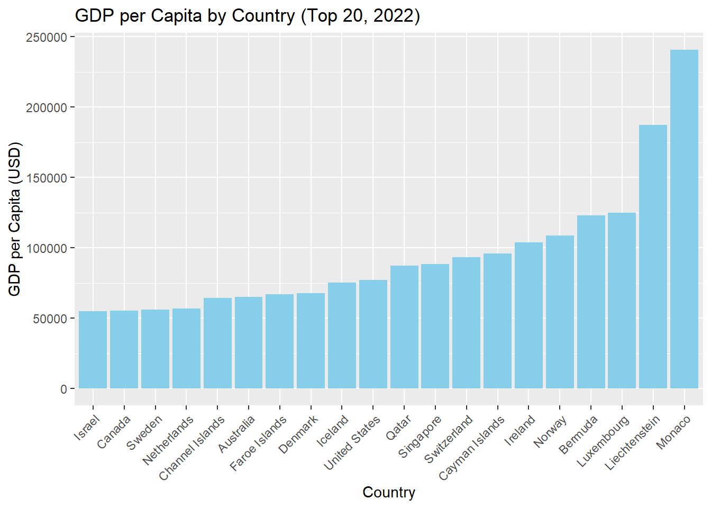
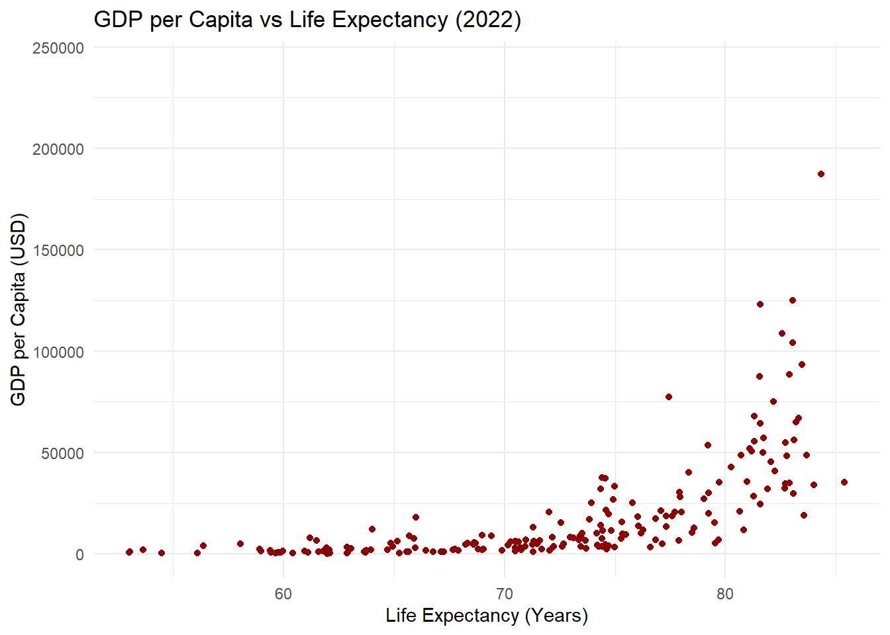

── Attaching core tidyverse packages ──────────────────────── tidyverse 2.0.0 ──
✔ dplyr 1.1.4 ✔ readr 2.1.5
✔ forcats 1.0.0 ✔ stringr 1.5.1
✔ ggplot2 3.5.1 ✔ tibble 3.2.1
✔ lubridate 1.9.3 ✔ tidyr 1.3.1
✔ purrr 1.0.2
── Conflicts ────────────────────────────────────────── tidyverse_conflicts() ──
✖ dplyr::filter() masks stats::filter()
✖ dplyr::lag() masks stats::lag()
ℹ Use the conflicted package (<http://conflicted.r-lib.org/>) to force all conflicts to become errors
Code
wdi_data <-read.csv("wdi.csv", header =TRUE)
3.Conduct exploratory data analysis on at least three indicators of your choice. Summarise your findings in markdown sections.
Summary Statistics
Code
# Summary for GDP per Capitagdp_per_capita_summary <-summary(wdi_data$gdp_per_capita)gdp_per_capita_summary
Min. 1st Qu. Median Mean 3rd Qu. Max. NA's
259 2571 7588 20346 25983 240862 14
Code
# Summary for Life Expectancylife_expectancy_summary <-summary(wdi_data$life_expectancy)life_expectancy_summary
Min. 1st Qu. Median Mean 3rd Qu. Max. NA's
53.00 66.78 73.51 72.42 78.47 85.38 8
Code
# Summary for Total Populationtotal_population_summary <-summary(wdi_data$total_population)total_population_summary
Min. 1st Qu. Median Mean 3rd Qu. Max.
1.131e+04 8.087e+05 6.465e+06 3.654e+07 2.607e+07 1.417e+09
The summary provides key metrics (minimum, 1st quartile, median, mean, 3rd quartile, maximum) for each indicator. This helps us understand the central tendency and spread of the data.
The correlation matrix shows the linear relationships between the variables. For example, a positive correlation between GDP per Capita and Life Expectancy might suggest that countries with higher incomes tend to have longer life expectancies.
The correlation matrix shows a moderate positive relationship between GDP per capita and life expectancy (r ≈ 0.64), indicating that higher income levels are generally associated with longer life expectancies. In contrast, both GDP per capita and life expectancy have almost no relationship with total population (r ≈ -0.06 and r ≈ -0.01, respectively), suggesting that a country’s population size does not significantly impact these measures.
4.Create at least two different types of plots (e.g., bar chart, scatter plot) to represent your analysis. Use Quarto code chunks to embed these visualisations. Add a title and axis labels to each plot. Use Quarto to include a caption and a reference to the source of the data. Hide your code in the final document.
top 20 countries with the highest GDP per Capita

Figure 1: Bar chart of GDP per Capita by Country (Top 20, 2022, in ascending order). Data source: World Development Indicators.
Scatter plot of GDP per Capita vs. Life Expectancy
Warning: Removed 20 rows containing missing values or values outside the scale range
(`geom_point()`).

Figure 2: Scatter plot of GDP per Capita vs. Life Expectancy (2022). Data source: World Development Indicators.
Warning: Removed 20 rows containing missing values or values outside the scale range
(`geom_point()`).
5. Construct a table that highlights some key statistics from your analysis. Ensure the table is well-formatted and included in the report.
Key Statistics for Selected Indicators (2022)
Data source: World Development Indicators
Indicator
Median
Variance
Mean
GDP per Capita
7,588
980,249,863
20,346
Life Expectancy
74
59
72
data source:World Development Indicators.
6. Include cross-references to your figures and tables within the text. Demonstrate proper labeling and referencing techniques.
In this report, we presented a bar chart (Figure (ref?)(gdp_bar)) that displays the top 20 countries by GDP per Capita, a scatter plot (Figure (ref?)(scatter_plot)) that illustrates the relationship between Life Expectancy and GDP per Capita, and a summary table (Table (ref?)(stats_table)) showing the key statistics for these indicators. The cross-references ensure that readers can easily navigate to the relevant figures and table for further details.
7. Add a bibliography using BibTeX (.bib). Cite at least two sources related to your analysis.